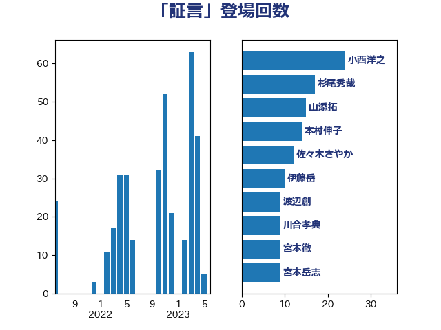

単語「証言」

| 小西洋之 | 立憲民主党 | 24 回 |
| 杉尾秀哉 | 立憲民主党 | 17 回 |
| 山添拓 | 日本共産党 | 15 回 |
| 本村伸子 | 日本共産党 | 14 回 |
| 佐々木さやか | 公明党 | 12 回 |
| 伊藤岳 | 日本共産党 | 10 回 |
| 渡辺創 | 立憲民主党 | 9 回 |
| 川合孝典 | 国民民主党 | 9 回 |
| 宮本徹 | 日本共産党 | 9 回 |
| 宮本岳志 | 日本共産党 | 9 回 |
| 山本太郎 | れいわ新選組 | 8 回 |
| 石橋通宏 | 立憲民主党 | 7 回 |
| 奥野総一郎 | 立憲民主党 | 7 回 |
| 山田勝彦 | 立憲民主党 | 6 回 |
| 石川大我 | 立憲民主党 | 4 回 |
| 田村貴昭 | 日本共産党 | 4 回 |
| 柚木道義 | 立憲民主党 | 4 回 |
| 東徹 | 日本維新の会 | 4 回 |
| 鎌田さゆり | 立憲民主党 | 3 回 |
| 西岡秀子 | 国民民主党 | 3 回 |
| 福島みずほ | 社会民主党 | 3 回 |
| 石川香織 | 立憲民主党 | 3 回 |
| 玉木雄一郎 | 国民民主党 | 3 回 |
| 志位和夫 | 日本共産党 | 3 回 |
| 徳永久志 | 立憲民主党 | 3 回 |
| 岸田文雄 | 自由民主党 | 3 回 |
| 城井崇 | 立憲民主党 | 3 回 |
| 加藤勝信 | 自由民主党 | 3 回 |
| 倉林明子 | 日本共産党 | 3 回 |
| 井上哲士 | 日本共産党 | 3 回 |
| 中川郁子 | 自由民主党 | 3 回 |
| 上田清司 | 国民民主党 | 3 回 |
| 高橋千鶴子 | 日本共産党 | 2 回 |
| 赤嶺政賢 | 日本共産党 | 2 回 |
| 藤岡隆雄 | 立憲民主党 | 2 回 |
| 田島麻衣子 | 立憲民主党 | 2 回 |
| 浜田聡 | NHK党 | 2 回 |
| 沢田良 | 日本維新の会 | 2 回 |
| 森本真治 | 立憲民主党 | 2 回 |
| 柴田巧 | 日本維新の会 | 2 回 |
| 林芳正 | 自由民主党 | 2 回 |
| 松本剛明 | 自由民主党 | 2 回 |
| 打越さく良 | 立憲民主党 | 2 回 |
| 岩谷良平 | 日本維新の会 | 2 回 |
| 寺田学 | 立憲民主党 | 2 回 |
| 安江伸夫 | 公明党 | 2 回 |
| 塩崎彰久 | 自由民主党 | 2 回 |
| 北神圭朗 | 無所属 | 2 回 |
| 仁比聡平 | 日本共産党 | 2 回 |
| 高良鉄美 | 無所属 | 1 回 |
| 高市早苗 | 自由民主党 | 1 回 |
| 青柳仁士 | 日本維新の会 | 1 回 |
| 阿部知子 | 立憲民主党 | 1 回 |
| 阿部弘樹 | 日本維新の会 | 1 回 |
| 長浜博行 | 無所属 | 1 回 |
| 藤巻健太 | 日本維新の会 | 1 回 |
| 舩後靖彦 | れいわ新選組 | 1 回 |
| 舟山康江 | 国民民主党 | 1 回 |
| 秋葉賢也 | 自由民主党 | 1 回 |
| 福島伸享 | 無所属 | 1 回 |
| 福山哲郎 | 立憲民主党 | 1 回 |
| 礒崎哲史 | 国民民主党 | 1 回 |
| 石破茂 | 自由民主党 | 1 回 |
| 田村智子 | 日本共産党 | 1 回 |
| 田村憲久 | 自由民主党 | 1 回 |
| 田名部匡代 | 立憲民主党 | 1 回 |
| 渡辺周 | 立憲民主党 | 1 回 |
| 池下卓 | 日本維新の会 | 1 回 |
| 江田憲司 | 立憲民主党 | 1 回 |
| 森屋隆 | 立憲民主党 | 1 回 |
| 梅村みずほ | 日本維新の会 | 1 回 |
| 村田享子 | 立憲民主党 | 1 回 |
| 杉田水脈 | 自由民主党 | 1 回 |
| 杉本和巳 | 日本維新の会 | 1 回 |
| 有村治子 | 自由民主党 | 1 回 |
| 早稲田ゆき | 立憲民主党 | 1 回 |
| 日下正喜 | 公明党 | 1 回 |
| 新藤義孝 | 自由民主党 | 1 回 |
| 掘井健智 | 日本維新の会 | 1 回 |
| 庄子賢一 | 公明党 | 1 回 |
| 川田龍平 | 立憲民主党 | 1 回 |
| 岸真紀子 | 立憲民主党 | 1 回 |
| 岡本あき子 | 立憲民主党 | 1 回 |
| 山井和則 | 立憲民主党 | 1 回 |
| 小池晃 | 日本共産党 | 1 回 |
| 天畠大輔 | れいわ新選組 | 1 回 |
| 大西健介 | 立憲民主党 | 1 回 |
| 大串博志 | 立憲民主党 | 1 回 |
| 和田政宗 | 自由民主党 | 1 回 |
| 原口一博 | 立憲民主党 | 1 回 |
| 勝部賢志 | 立憲民主党 | 1 回 |
| 伊波洋一 | 無所属 | 1 回 |
| 中谷一馬 | 立憲民主党 | 1 回 |
| 三上えり | 立憲民主党 | 1 回 |